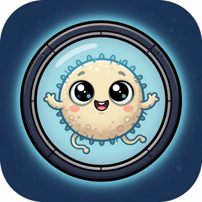
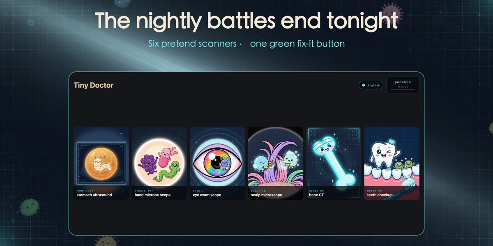
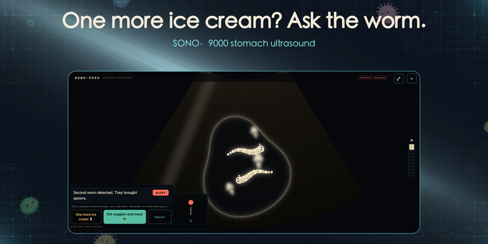
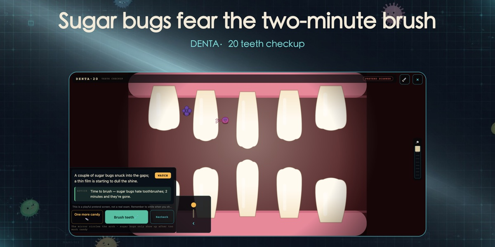

中文名:三假小医院 — 一家「三假」认证的假医院
A doctor pretend play app for kids ages 3–8. Six silly medical instruments a grown-up runs, with a wink, to end the nightly battles: hand-washing, tooth-brushing, too much ice cream, and too much screen time.
Download on the App Store Get it on Google PlayPoint the “scanner” at your child and the instrument finds something wonderfully silly — a sleepy ice-cream worm in the tummy, sugar bugs napping on a tooth, germs holding a sports day on an unwashed hand.
Every screen is clearly labeled a PRETEND SCANNER. The child presses the one green button, the machine hums, and everything comes back clean, every time. The lesson lands because the fix is theirs.
Pressure goes on the habit, never on the kid. Remember to smile when you show it.
Each one targets a habit every parent recognizes.
Meet the ice-cream worm. For too much ice cream and picky eating.
Germs at 40× magnification. Turns hand-washing into the child's own victory.
The eye sprite and the blurry chart. For screen-time negotiations.
Sugar bugs vs. the toothbrush. The tooth-brushing battle, ended.
The bone sprite and gentle-play cracks. For sofa acrobatics.
Shampoo-dodging germs, exposed. Hair-washing refusal, solved.



This is a tool you run — not a game that babysits.
A parent area (2-second hold to enter) with a debrief script for landing the joke kindly, so the pretend play turns into a real habit.
Caps every instrument at “watch” for sensitive kids. Nothing scary, ever — every scan comes back clean.
English, Chinese (中文), Hindi, Spanish, and French — the whole family can play in their own language.
One-time purchase unlocks all instruments. No analytics SDK, no ad network, no sign-in. Nothing ever leaves the phone.
Tiny Doctor is designed for kids ages 3–8, played together with a parent or grown-up. It works best as a shared bit of theater, not solo screen time.
No — those are animal-clinic games by other studios. Simbino's Tiny Doctor is a habit-building pretend doctor kit: the “patient” is your own child, and the goal is winning real-life routines like hand-washing and tooth-brushing.
Tiny Doctor is free to download with two instruments included — the stomach ultrasound and the hand microscope. A single one-time purchase unlocks all six. There are no subscriptions and no ads.
No. Tiny Doctor collects no data at all — there is no analytics SDK, no ad network, and no account system. Everything stays on your phone. See our privacy policy.
Yes. Tiny Doctor is free on the App Store for iPhone and iPad, and free on Google Play for Android.
Download Tiny Doctor and let the ice-cream worm do the talking.
Download on the App Store Get it on Google Play